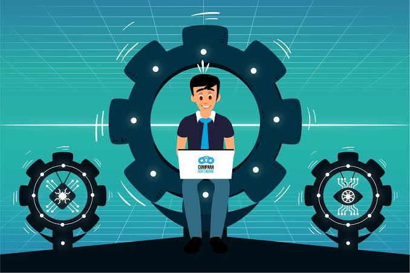

Ponemos a tu alcance un servicio adaptado a tus necesidades, desde una consultoria integral con super-vision de todos y cada uno de los pasos que has de seguir para crear un negocio actual(comunicacion, diseño corporativo, tecnologias...) a productos adaptados a metodologias ágiles de creacion de apps diseñadas por nosotros y avaladas por nuestros años de experiencia
Las redes 5G previsiblemente transformarán nuestra forma de relacionarnos con la tecnología, porque permitirán que las personas se puedan conectar con sus amigos y conocidos, pero también con los objetos que les rodean, como los electrodomésticos o los vehículos en que se desplazan. Para lograr esta interconexión digital de objetos cotidianos, que se conoce como el internet de las cosas, las redes 5G deben ser capaces de transportar un volumen de datos un millar de veces superior al de las redes 4G actuales, a una velocidad muy superior y con un consumo energético mucho menor para minimizar el impacto medioambiental. En un futuro muy cercano, encontraremos 5G tanto en nuestra vida cotidiana como en entornos industriales (la denominada industria 4.0)
Para que cualquier municipio se considere una ciudad inteligente, debe reunir estas condiciones:
Los chips de Inteligencia Artificial se encargan principalmente de reconocer y entender las emociones y estados físicos de las personas a través del reconocimiento facial y de voz. El machine learning tiene como objetivo registrar los diferentes datos, para interpretarlos, y posteriormente, adaptarlos a nuestras necesidades. Esto ha supuesto un gran avance en el campo de las Apps móviles permitiendo calibrar de mejor forma sus funciones.Uno de los beneficios principales de este sistema es su vinculación directa con la biometría añadiendo funciones a los sistemas de seguridad de nuestros smartphones como es el caso del reconocimiento facial para desbloquear los móviles.
El vehículo autónomo es un automóvil capaz de imitar las capacidades humanas de manejo y control, percibiendo el medio que le rodea y desplazándose según la dirección o plan de destino autorizado. Éste funciona mediante la combinación de una computadora, una cámara, diferentes sensores y automatismos, los que hacen que el coche se mueva solo.Lo principal es la computadora con un paquete de informática (software) con el que se programa todo el sistema de conducción autónoma, en éste están codificadas todas las normas de tráfico (incluidas señales y prioridades de paso), los mapas de calles y lugares de cada ciudad (Google Street View). También se programa para que el coche gire a la derecha o izquierda, frene, ceda el paso y la velocidad.
La Identidad Digital es el conjunto de informaciones publicadas en Internet sobre mí y que componen la imagen que los demás tienen de mí: datos personales, imágenes, noticias, comentarios, gustos, amistades, aficiones, etc. Todos estos datos me describen en Internet ante los demás y determina mi reputación digital, es decir, la opinión que los demás tienen de mí en la red. Esta identidad puede construirse sin que se corresponda exactamente con la realidad. Sin embargo lo que se hace bajo esa identidad digital tiene sus consecuencias en el mundo real y viceversa.Es social. Se construye navegando por las redes sociales a partir del reconocimiento de los demás sin ni siquiera llegar a comprobar si esa identidad es real o no.
El aspecto central sobre el que se basa el diseño del sistema bitcoin es que no hay una autoridad central. Ante esto, se requiere un mecanismo para determinar quién es dueño de qué monedas. Dicho mecanismo debe ser distribuido (repartido entre una red de nodos) y resistente a ataques que quieran alterar su integridad. Este es el rol que juega el blockchain. Es una bitácora donde se registran todas las transacciones de bitcoins que es compartida por todos los nodos que participan en la red bitcoin.En otras palabras, el blockchain es una bitácora transaccional distribuida, y en el caso del bitcoin viene a ser el equivalente a su libro mayor de contabilidad (ledger).
Copyright ° 2018 . todos los derechos reservado